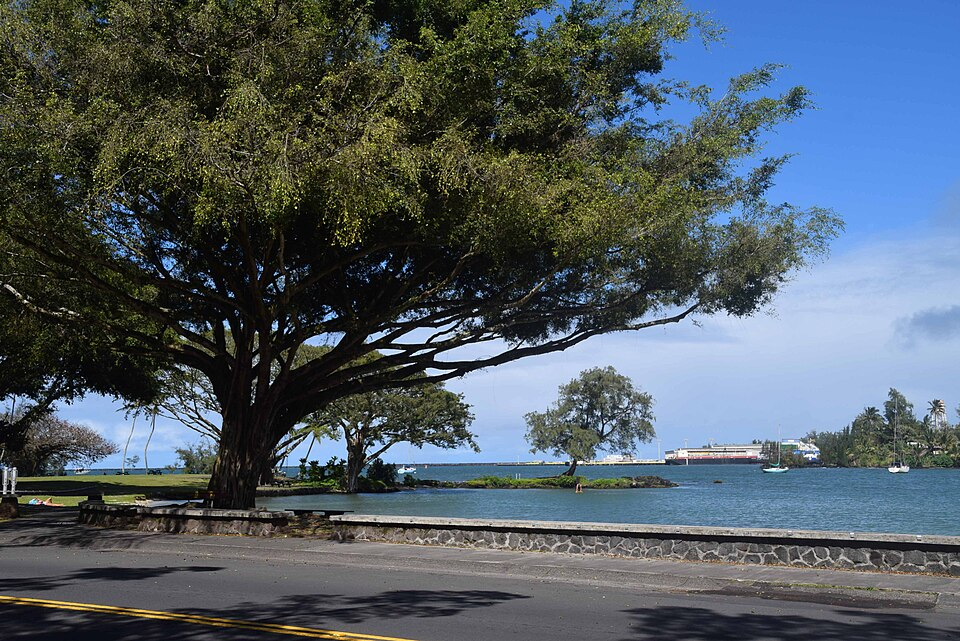

Banyan Drive
Place: Banyan Drive, Waiākea Peninsula, Hilo
Type: Waterfront boulevard and hotel district
Namesake: The banyan trees planted along the road by prominent visitors beginning in 1933
Story it tells: How Hilo transformed a working waterfront into a tropical tourist attraction by inviting celebrities to plant a living “walk of fame.”

Banyan Drive curves around the edge of Hilo's Waiākea Peninsula beneath a canopy of enormous trees. Small plaques near the trees identify an unusual collection of planters: baseball star Babe Ruth, aviator Amelia Earhart, President Franklin D. Roosevelt, filmmaker Cecil B. DeMille, and other prominent visitors.
The road is sometimes called Hilo's “Walk of Fame,” but its celebrity trees were not planted merely to commemorate famous people. Banyan Drive was created as a carefully staged tourism campaign intended to give travelers a reason to leave their steamships, explore Hilo, and remember the town as a tropical destination.
The campaign began in 1933, when local parks commissioner Eugene Mitchell and community leaders including Al Ruddle and Herbert Shipman began inviting notable visitors to plant banyan saplings along the waterfront. The first opportunities arrived almost by accident. Cecil B. DeMille and members of the cast of Four Frightened People were in Hilo filming on Hawaiʻi Island. Local organizers approached them, offered them shovels, and turned their visit into the beginning of a living memorial avenue.
Only a short time later, Babe Ruth arrived in Hilo during a baseball exhibition tour and planted another tree. Franklin D. Roosevelt followed during a presidential visit in 1934. Crews reportedly improved the rough coral roadway in anticipation of his arrival, allowing the president's vehicle to travel comfortably around the peninsula. Amelia Earhart planted her banyan in 1935, shortly before completing her historic solo flight from Hawaiʻi to California.
The Indian banyan tree was chosen by promoters due to its ability to grow and dominate the route. Its broad branches and descending aerial roots gradually form massive, interconnected trunks. Planted in a row, the trees promised to grow into a dramatic green tunnel over the road. Their unusual appearance also reinforced the tropical image local boosters wanted arriving visitors to associate with Hilo. Each visiting celebrity became part of the landscape, and each growing tree became a permanent advertisement for Hilo.
The name Banyan Drive describes the boulevard's most visible feature, but it also preserves the purpose behind its creation. The trees were planted to transform the Waiākea waterfront from a working and residential district into a place designed to be seen, photographed, remembered, and discussed beyond Hilo.
Before Western contact, Waiākea was one of the most productive and important districts along Hilo Bay. Freshwater springs, streams, wetlands, and protected coastal waters supported extensive systems of loʻi kalo and loko iʻa. Hawaiians cultivated kalo inland and raised fish such as ʻamaʻama and awa within large stone-walled ponds.
The peninsula was also associated with chiefly residence, religious activity, and important heiau. Nearby Moku Ola, now commonly called Coconut Island, was a place of healing and refuge. Its name is often translated as “Island of Life” or “Island of Healing.”
During the nineteenth century, the Waiākea landscape was remade by commercial sugar. Loʻi and fishponds were drained, filled, or incorporated into plantation infrastructure. Rail lines carried cane and supplies between the Waiākea Mill, surrounding fields, and Hilo Harbor. The peninsula developed into a densely settled community of plantation workers, small businesses, and waterfront industries.
Many Japanese immigrant families lived in the area, which became known locally as Yashijima, or “Coconut Island.” Wooden homes, stores, barber shops, food businesses, and neighborhood gathering places stood near the shoreline. By the time the banyan planting campaign began, the peninsula was a busy multicultural community being gradually repackaged as a scenic visitor district.
The contrast was striking. Behind the newly planted trees stood plantation housing, railroad tracks, commercial buildings, and harbor infrastructure. Yet the road presented visitors with a curated image of Hilo: famous personalities, exotic trees, ocean views, and a leisurely drive around the bay.
The trees later became survivors of one of the most destructive periods in Hilo's history. On April 1, 1946, a tsunami generated in the Aleutian Islands struck the city and devastated the Waiākea waterfront. Wooden buildings were swept away, neighborhoods were destroyed, and dozens of people were killed in the Hilo area. The disaster erased much of the community that had surrounded the young banyans.
A second major tsunami struck in 1960 after an earthquake off Chile. Waves again surged through Hilo Bay, destroying structures and reshaping the waterfront. Some banyans were lost or heavily damaged, while some plaques identifying trees were torn off. Several surviving trees remain anonymous because the records connecting them to their original planters disappeared with the waves.
After the disasters, much of Hilo's low-lying waterfront was converted into open parkland and concrete hotels rather than rebuilt. Banyan Drive and the Waiākea Peninsula developed into the center of East Hawaiʻi's hotel industry. The Hilo Hawaiian Hotel, Uncle Billy's Hilo Bay Hotel, the Naniloa, and other accommodations made the loop the primary lodging district for visitors to Hilo and events such as the Merrie Monarch Festival.
The hotels represented another reinvention of the peninsula. Hawaiian fishponds and religious sites had given way to plantation infrastructure and immigrant neighborhoods. Those communities were then replaced by parks, hotels, and a visitor landscape organized around the surviving banyan trees.
Over time, aging buildings and expiring state land leases contributed to years of deferred maintenance and decline. Some hotels closed, abandoned structures deteriorated, and portions of the boulevard no longer reflected the polished resort district envisioned during its mid-century peak. The banyans continued to dominate the road, their roots and branches outlasting the buildings constructed around them.
Today, Banyan Drive remains both a landmark and a record of Hilo's repeated transformations. Visitors see a tunnel of trees, but the boulevard also reveals how places can be deliberately redesigned and renamed to shape public imagination.
The banyans were real trees planted by real visitors, but the landscape they created was also a marketing strategy. Hilo's leaders selected an exotic, invasive species, recruited famous personalities, and turned ceremonial tree planting into a reason for travelers to remember the town. Nearly a century later, the campaign has become history, and its living advertisements have continued growing, even as the stories slowly fade over time.
Banyan Drive attempts to preserve the story of how Hilo introduced itself to the world and how that carefully constructed image grew above a landscape already had a history involving Hawaiian aquaculture, sacred places, plantation industry, immigrant communities, and tsunamis.